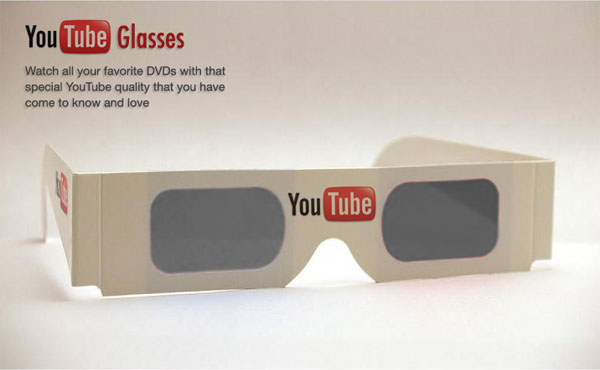
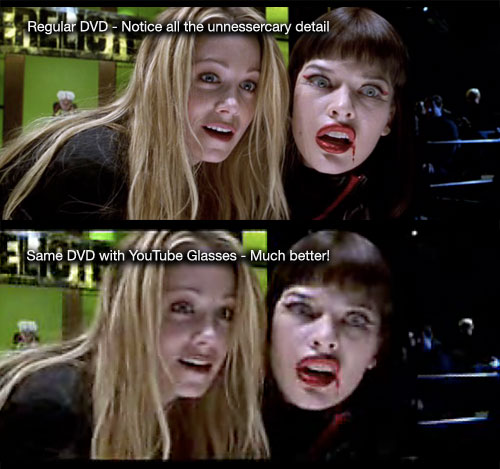

Tokyo F.A.T



We got a sneak peak of some new technology being developed at the labs over at You Tube. Apparently people who watch a lot of shows and movies online have been complaining that the quality of DVDs and HD TV shows is too fine and detailed for their internet eyes. In response You Tube developed these glasses which adds compression artifacts, noise and out of sync audio so as to make “non-web video” more palatable. We managed to obtain a comparison image bellow which shows the difference the You Tube Glasses makes to standard DVD content.


Our sources also tell us that the production version of the glasses will feature the classic You Tube watermark on the lower right hand side for added web video realism.
COMMENTS
The expressions published in this site are all in the public domain. You may enjoy, use, modify, snipe about and republish all F.A.T. media and technologies as you see fit.
i would offer $1.2M linden dollars for this fine invention
nice glasses! who cares about high definition DVDs and blue ray discs, our medium is high speed internet
Ha ha yeah – High Speed > HD
It is a little funny though over the last years the more our technology has advanced the lower the quality the things we watch and listen to have become.
Vinyl -> Tape -> CD -> Mp3
Film -> DVD -> You Tube
Anyway I have come to love the youtube ascetic – my favorite part is when you get blocky tetris shapes from previous frames that are all greeny-purple.
fantastic.
the new “UNIVERSAL” logo earth:
Did you know that you can emulate the behaviour of this You Tube glasses? Just take real glasses that you can get in any store. And just wear them. Don’t polish them. If the glasses are getting dirty enought(not polished for ages) you will get close to the YouTube glasses. This emulation not only affects media-footage, but applies to reality as an extra feature. And will be maybe much cheaper.
[…] new product from YouTube — glasses to make watching HD resemble the quality of YouTube videos, since, you know, we are now used to bad encoding when it comes to these “moving […]
[…] citare la descrizione di questo curioso oggetto come compare nell’esilarante articolo dedicatogli da Theo Watson: “Abbiamo messo le mani sull’anteprima di una una nuova tecnologia sviluppata nei […]
[…] scharfen Farben die Linsen penetriert. Kein Problem mehr, denn dafür gibt’s jetzt die YouTube-Brille. Bookmark […]
Complain…complain. I remember when all you could get get was Rm. files. talk about blocky with audio that sounded like it came from outerspace.
This is quite possibly the stupidest and worst board of all time. Digital Tools – you are a big douche.
Cronos, you’re face is a big douche
oh, many net freeks must be happy about this product…
Gafas para conseguir el efecto Youtube en todos tus videos…
Porque esta gente sabe que te gusta Youtube, han sido los primeros en diseñar estas revolucionarias gafas. Incluso han colgado una demostración del efecto en la web. Además, está prevista una segunda versión donde el realismo será total. En Ingl…
[…] Lösung ist der kauf einer neuen Youtube-Brille. Wie der F.A.T.-Blog berichtet, wird die Brille derzeit in den You Tube Forschungslaboren […]
[…] (ok ZM, du im Moment nicht) im wahren Leben mal überfordern sollte, greift doch einfach zur Youtube-Brille. Die verdunkelt, macht unscharf und vermatscht die […]
[…] HIER kann man sich das Gerät und all seine Vorzüge mal zu Gemüte führen. […]
[…] Ach ja und um besser sehen zu können benutze bitte die neue You-tube-Brille. […]
[…] Erstaunlich was diese Brille aus den grafischen Moeglichkeiten noch herausholen kann. Zu kaufen gibt es das Ding hier. […]
[…] zu erleben. Ob VHS oder DVD, selbst das tägliche Fernsehprogramm kann mit der praktischen YouTube-Brille in ein sauberes, youTube’eskes Bild ohne störende Details umgewandelt werden. Hier der […]
[…] Also schnell kaufen, kaufen, kaufen: https://fffff.at/youtube-glasses […]
Doods, you will even need these for watching youtube soon. If you add &fmt=6 to youtube urls, they appear in almost HIDEF HTTV BLUERAY quality!
[…] YouTube Glasses | F.A.T. __________________ Gruß, Jochen —— Gerne der Zeiten gedenk’ ich, da alle Glieder gelenkig – bis auf eins. Doch die Zeiten sind vorüber, steif geworden alle Glieder – bis auf eins. Johann Wolfgang von Goethe […]
[…] YouTube Glasses | F.A.T. Edit: https://fffff.at/tourettes-machine/ __________________ Gruß, Jochen —— Gerne der Zeiten gedenk’ ich, da alle Glieder gelenkig – bis auf eins. Doch die Zeiten sind vorüber, steif geworden alle Glieder – bis auf eins. Johann Wolfgang von Goethe Geändert von Jochen Diekenbrock (Heute um 10:21 Uhr). […]
You got a sneak peek or a sneak peak? One’s much bigger – or dirtier – than the other.
[…] unseren von Internetvideos und schlechten Raubkopien konditionierten Augen? Kein Problem, mit den Youtube-Glasses geht alles seinen gewohnten […]
[…] schauen die Realität viel zu scharf vorkommt und in euren Augen schmerzt, schafft diese Brille des F.A.T Kollektives (Free Art & Technology) Abhilfe. Leider ist das Design wenig straßentauglich und erinnert mich stark an Sonnenfinsternis. […]
dog skin disorder tonic supplement [url=http://rxdrugs24x7.com/product/ed-discount-pack-3.html]Order ED Discount Pack #3[/url] can stress cause vision problems [url=http://rxdrugs24x7.com/product/ddavp-2-5ml.html]sinus infection and dry cough[/url] colic medicine great britain
http://rxdrugs24x7.com/product/zyrtec.html
I really would recommend using blinkbox as it offers brilliant content, both free and paid for to which is all clearly marked.
Thanks for sharing – Really interesting insight. Enjoyed!
i love the Bazooka of Megatron, i don’t understand why they did not include it on the movie `-:
very post. blog add my bookmarks
It had been wonderful to study through your write-up. I just loved the few minutes that I spent studying it and needed to leave a comment to mention that….Kind regards